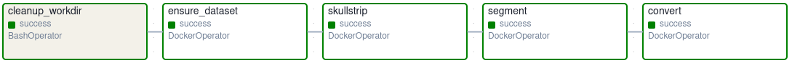

name: title layout: true class: cover --- count: false counter: false .section-mark.center[ <a href="https://oesteban.github.io/isc-hei-302/week2/day1/index.html"> <object type="image/svg+xml" data="images/qr-talk-url.svg" style="width: 20%"></object> <br /> https://oesteban.github.io/isc-hei-302/week2/day1/index.html </a> <br /> <br /> ## Specifying pipelines & Apache Airflow Oscar Esteban <<code>oscar.esteban@hevs.ch</code>> <br /> ### 302 Data computation (week 2, day 1) — 22.09.2025 ] ??? --- name: newsection layout: true .perma-sidebar[ <p class="rotate"> <a rel="license" href="http://creativecommons.org/licenses/by/4.0/"><img alt="Creative Commons License" style="border-width:0; height: 20px; padding-top: 6px;" src="https://i.creativecommons.org/l/by/4.0/88x31.png" /></a> <span style="padding-left: 10px; font-weight: 600;">Specifying pipelines & Apache Airflow (22.09.2025)</span> </p> ] --- # Objectives .boxed-content.larger.no-bullet[ * .large[<i class="fa-solid fa-circle-right"></i> Convert a DAG sketch into a data pipeline specification] <br /> .indent[.gray-text[applying *Apache Airflow* as first option]] <br /> * .large[<i class="fa-solid fa-circle-right"></i> Recognize *Apache Airflow*'s main components] <br /> .indent.gray-text[play with the Web UI, describe how its components relate to one another] <br /> * .large[<i class="fa-solid fa-circle-right"></i> Deploy *Apache Airflow* on a laptop with *Docker*] <br /> .indent[.gray-text[reinforcing the first steps with *Docker compose* from the previous session]] <br /> * .large[<i class="fa-solid fa-circle-right"></i> Create advanced *Apache Airflow*'s DAGs] <br /> .indent[.gray-text[applying operators: `BashOperator`, `PythonOperator`, `DockerOperator`]] <br /> * .large[<i class="fa-solid fa-circle-right"></i> Build, orchestrate, and execute the pipeline of Day 1] <br /> .indent.gray-text[Exercise monitoring, logging, and benchmarking] <br /> ] --- .boxed-content.program-table[ | Time | Content | |:--:|:--| | 8h15 | Quick quiz (**not graded**). | | 8h35 | **Challenge from 18.09**: Group 2 presentation | | 9h00 | **Roulette**: what do we expect from Airflow? | | 9h15 | **Class**: *Apache Airflow* introduction | | 10h05 | .gray-text[Short break] | | 10h15 | **Group challenge**: Creating a new Bash&Python pipeline | | 11h45 | .gray-text[Lunch break] | | | | | 12h45 | **Group challenge**: neuro-302 with Airflow and Docker compose | | 15h00 | Quick quiz (repetition) | | 15h30 | Preparation of next session (groups, and flipped class lectures) | | 15h50 | Voluntary time | | 16h10 | .gray-text[End] | ] --- .section-mark[ # Quick quiz .large[20 minutes, not graded] ] --- # Housekeeping <br /> .boxed-content.large[ * Please upload your group's repo link to ISC Learn * Discussion about LLMs' assistance in challenges * Check Quick quizz results ] --- count: false class: group-roulette groups: 4 seed: 18.09.2025 <br /> .boxed-content[ # Group challenges from last session .large[ 1. Group 2 describes their solution. 1. Status of groups 1, 3 & 4. 1. Discussion 1. Recap of the three challenges. ] ] --- class: roulette time: 45 .section-mark[ # Roulette .large[What do you expect from a pipeline framework/engine?] ] ??? --- .section-mark[ # Apache Airflow .large[First overview] ] --- # Why Airflow? .boxed-content.larger.no-bullet[ * .large[<i class="fa-solid fa-circle-right"></i> You have a **pipeline**] <br /> .gray-text.indent[You have **multiple steps** that transform data; each depends on prior results.] * .large[<i class="fa-solid fa-circle-right"></i> You need a powerful **scheduling** system] <br /> .gray-text.indent[Contrarian view: *[Airflow is just cron on steroids](https://www.youtube.com/watch?v=YQ056EKzCyw)*.] * .large[<i class="fa-solid fa-circle-right"></i> You need easy access to **pipeline management**] <br /> .gray-text.indent[A solid *service* to query status, retries, alerts, logs, timing, lineage.] * .large[<i class="fa-solid fa-circle-right"></i> You want pipeline **optimization**] <br /> .gray-text.indent[Tools like *Airflow*'s Gantt chart make the critical path obvious.] ] .gray-text.large[Airflow focuses on *orchestration* (when/what/where), not the analytics themselves.] ??? Key idea: instead of humans running scripts in ad-hoc order, Airflow coordinates tasks, enforces dependencies, and records outcomes & timings. --- # Airflow's jargon <br /> .boxed-content.no-bullet[ * .large[<i class="fa-solid fa-diagram-project"></i> **DAG** — name for pipelines in *Airflow*] <br /> .indent.gray-text[In fact, you save them under a folder called `dags/`] <br /> * .large[<i class="fa-solid fa-list-check"></i> **Task** — one node in the DAG] <br /> .indent.gray-text[Tasks are crated with **Operator**s] <br /> * .large[<i class="fa-solid fa-dharmachakra"></i> **Operator** — Python wrapper to run a kind of work] <br /> .indent.gray-text[We'll work with Bash, Python and Docker operators] <br /> * .large[<i class="fa-solid fa-object-group"></i> **Task Instance** — A task after execution of the corresponding DAG] <br /> <br /> * .large[<i class="fa-solid fa-flag-checkered"></i> **Run** — a DAG execution] ] --- # Airflow's Components <br /> .boxed-content.no-bullet[ * .large[<i class="fa-solid fa-server"></i> **Webserver** — UI (Graph/Grid view), trigger runs, browse logs] <br /> <br /> * .large[<i class="fa-solid fa-calendar-days"></i> **Scheduler** — decides *what* to run *when*; queues tasks] <br /> <br /> * .large[<i class="fa-solid fa-person-digging"></i> **Workers** — where tasks actually run (processes/containers)] <br /> <br /> * .large[<i class="fa-solid fa-database"></i> **Metadata DB** — persistent state (DAGs, runs, tasks, logs paths)] <br /> <br /> * .large[<i class="fa-solid fa-clapperboard"></i> **Executor** — submits tasks to workers] <br /> <br /> ] --- # Single-machine/single-role deployment .boxed-content.center[ <img src="https://airflow.apache.org/docs/apache-airflow/stable/_images/diagram_basic_airflow_architecture.png" style="width: 80%" /> .center.small[ From the [official *Airflow*'s documentation](https://airflow.apache.org/docs/apache-airflow/stable/core-concepts/overview.html#basic-airflow-deployment) ] ] ??? --- # Cluster/cloud/multi-role deployment .boxed-content.center[ <img src="https://airflow.apache.org/docs/apache-airflow/stable/_images/diagram_distributed_airflow_architecture.png" style="width: 82%" /> .center.small[ From the [official *Airflow*'s documentation](https://airflow.apache.org/docs/apache-airflow/stable/core-concepts/overview.html#basic-airflow-deployment) ] ] ??? --- # First DAG .boxed-content[ .large[ ```python from airflow import DAG from airflow.operators.bash import BashOperator from datetime import datetime with DAG( dag_id="example", schedule_interval=None, # on-demand first ) as dag: a = BashOperator(task_id="a", bash_command="echo A") b = BashOperator(task_id="b", bash_command="echo B") a >> b # dependency: B requires A to finish first ``` ] ] .large[**schedule_interval**: how often (cron preset like `@daily`, `@hourly`, or [cron](https://crontab.guru/)).] ??? --- count:false # First DAG .boxed-content[ .large[ ```python from airflow import DAG from airflow.operators.bash import BashOperator from datetime import datetime with DAG( dag_id="example", schedule_interval=None, # on-demand first ) as dag: a = BashOperator(task_id="a", bash_command="echo A") b = BashOperator(task_id="b", bash_command="echo B") a >> b # dependency: B requires A to finish first ``` ] ] .large[`BashOperator` declares a task executed in *Bash*] ??? - **schedule_interval**: how often (cron preset like `@daily`, `@hourly`, or [cron](https://crontab.guru/)). --- count:false # First DAG .boxed-content[ .large[ ```python from airflow import DAG from airflow.operators.bash import BashOperator from datetime import datetime with DAG( dag_id="example", schedule_interval=None, # on-demand first ) as dag: a = BashOperator(task_id="a", bash_command="echo A") b = BashOperator(task_id="b", bash_command="echo B") a >> b # dependency: B requires A to finish first ``` ] ] .large[Bitshift operators (`>>`, `<<`) declare dependencies.] ??? - **schedule_interval**: how often (cron preset like `@daily`, `@hourly`, or [cron](https://crontab.guru/)). --- # Operators .boxed-content.no-bullet[ * .large[**BashOperator** — run shell commands (e.g., `date`, `sleep`)] * .large[**PythonOperator** — run a Python callable] * .large[**DockerOperator** — launch a container to do work] .gray-text.larger[*Airflow* has many more via **providers** (e.g., SQL, cloud, filesystems).] .larger[ ```Python from airflow.operators.python import PythonOperator def prepare_dirs(): """Create output folders and clear intermediate outputs from previous runs.""" ... with DAG(dag_id="python-task", schedule_interval=None) as dag: t_prepare = PythonOperator( task_id="prepare_dirs", python_callable=prepare_dirs, ) ``` ] ] ??? --- # Passing data: XCom .boxed-content.large[ ```python from airflow.operators.python import PythonOperator def produce(**ctx): return "hello" def consume(**ctx): ti = ctx["ti"] print("Got:", ti.xcom_pull(task_ids="produce")) p = PythonOperator(task_id="produce", python_callable=produce) c = PythonOperator(task_id="consume", python_callable=consume, provide_context=True) p >> c ``` ] .gray-text.larger[Useful sparingly; for larger data, persist to files/objects and pass **references**.] --- # Good DAG hygiene (for this course) <br /> .boxed-content.no-bullet[ * .large[<i class="fa-solid fa-minimize"></i> Keep tasks **small & deterministic**; idempotent if possible] * .large[<i class="fa-solid fa-map-pin"></i> Prefer **explicit dependencies** (`a >> b`) to hidden coupling] * .large[<i class="fa-solid fa-file-contract"></i> Use **parameters** and **env vars** instead of hard-coding paths] * .large[<i class="fa-solid fa-clipboard"></i> Log **inputs/outputs**; keep an eye on **latency**] * .large[<i class="fa-solid fa-spell-check"></i> Check Python **style**: ```Bash ruff check dags/ --select AIR301 --preview ``` ] ] ??? In the context of workflows (like Airflow, Luigi, Nextflow, Snakemake, etc.), an idempotent task is one that you can run multiple times with the same inputs and it will always produce the same effect (same outputs, same state), without causing corruption, duplication, or unintended side effects. ## Key ideas * Deterministic outputs: Given the same inputs, the task always produces the same results. * Safe to re-run: If a task is retried after a failure, or triggered again by accident, it won't “double-count” or otherwise break downstream steps. * No destructive side effects: It doesn't accumulate garbage (e.g., append duplicates, create different filenames each time) unless that's the intended behavior. --- .section-mark[ # Setting-up .large[ Let's follow the [official guide](https://airflow.apache.org/docs/apache-airflow/2.11.0/howto/docker-compose/index.html) to set-up Airflow with Docker ] ] --- count: false # Step 1 — Get the official Compose stack .boxed-content[ ```bash # In a new, empty directory curl -LfO 'https://airflow.apache.org/docs/apache-airflow/2.11.0/docker-compose.yaml' # Bind-mount folders Airflow expects mkdir -p ./dags ./logs ./plugins ./config # (Linux only) Make host UID visible echo -e "AIRFLOW_UID=$(id -u)" > .env # One-time DB & user init (user: airflow / pass: airflow) docker-compose up airflow-init # Start the stack (webserver, scheduler, worker, redis, postgres, flower) docker-compose up ``` ] .gray-text.large[ Keep this terminal running; use a second terminal for edits. Now, open **http://localhost:8080** and log in with `airflow / airflow`. ] --- .section-mark[ # Q&A .large[Then we jump into the group challenge] ] --- # **Group Challenge** ## Deploy Apache Airflow and develop the following pipeline: .boxed-content[ <img src="images/newsgroup-pipeline.png" style="width: 100%" /> ] ??? --- # Challenge's DAG - Tasks .boxed-content.no-bullet[ * .large[<i class="fa-solid fa-snowplow"></i> **prepare_dirs**:] <br /> .indent.gray-text[ensure necessary folders exist, clean up previous intermediate results] * .large[<i class="fa-solid fa-newspaper"></i> **fetch_newsgroups**: get data and preprocess] <br /> .indent.gray-text[download the 20 Newsgroups dataset, suggestion: [with scikit-learn](https://scikit-learn.org/stable/modules/generated/sklearn.datasets.fetch_20newsgroups.html) remove "stopwords", clean text (e.g., normalize spaces, remove punctuation), convert to lowercase] * .large[<i class="fa-solid fa-scissors"></i> **split_into_shards**: prepare parallelization] <br /> .indent.gray-text[chunk the dataset into four blocks, approximatelly even in size] * .large[<i class="fa-solid fa-calculator"></i> **count_shards**: count words] <br /> .indent.gray-text[runs four **count_words_shard_nn** in parallel] * .large[<i class="fa-solid fa-ranking-star"></i> **aggregate_counts**: prepare for use] <br /> .indent.gray-text[aggregate the sharded counts and generate a TSV file with all words counts] <br /> .large[<i class="fa-solid fa-circle-right"></i> Check [how to manage dependencies with this tutorial](https://www.astronomer.io/docs/learn/managing-dependencies)] ] --- # Tip - Add scikit-learn to the airflow image .boxed-content[ Create a `Dockerfile` where indicated in your `docker-compose.yaml` (e.g., `airflow/Dockerfile`): .large[ ```dockerfile FROM apache/airflow:2.11.0-python3.9 USER root # Add the Python environment RUN python -m pip install -U --no-cache-dir pip && \ python -m pip install --no-cache-dir "scikit-learn>=1.2" # Back to the airflow user USER airflow ``` ] ] --- class: group-roulette groups: 4 seed: 22.09.2025 <br /> .boxed-content[ # **Group Challenge**: ## Airflow pipeline to count the words in the 20 newsgroup dataset .large[Please remember to group with your team after the break] ] --- .section-mark[ # Short break .large[We reconvene .timer[in 10 minutes].] ] --- count: false class: group-roulette groups: 4 seed: 22.09.2025 <br /> .boxed-content[ # **Group Challenge**: ## Airflow pipeline to count the words in the 20 newsgroup dataset ] --- .section-mark[ # Lunch break .large[We reconvene in <span class="timer">1 hour</span>.] ] --- # **Group challenge**: neuro pipeline with Airflow + Docker .boxed-content.large[ - Extend the **official Airflow 2.11.0** stack with the **Docker provider** <br /> .gray-text[Similar to adding scikit-learn before] - Allow tasks to start sibling containers via the **Docker socket** <br /> .gray-text[We practiced this last week] - Create a DAG that runs **`oesteban/afni:latest`** and **persists outputs** to the host <br /> .gray-text[the `oesteban/afni:latest` image contains *DataLad* too] <p></p> ] --- class: group-roulette groups: 4 seed: 22.09.2025 <br /> # **Group challenge**: neuro pipeline with Airflow + Docker .boxed-content[ .large[Work with your group, we reconvene and check results at 14h30] <br /> ] ??? --- .section-mark[ # Quick quiz (repeat) .large[20 minutes, not graded] ] --- # Flipped-class | Description .boxed-content[ ### Summary .large[ * Thursday, 25th, will be **self-guided**. * There will be a **quizz before and after**. ] ### Flipped-class: description & topics .large[ * Flipped-class **presentations will be graded**. * Materials presented in the flipped class **will be part of the final exam**. * Materials for the flipped-class **will be graded**. ] ] ??? --- # Flipped-class topics: **Pipelines** .boxed-content.large[ 1. ETL vs. ELT and the warehouse/lake/lakehouse triad (architectures, pros/cons, common tools). 1. Data formats for pipelines: CSV/JSON vs. Parquet/Dataframes (schema evolution, compression, interoperability). 1. Observability for pipelines: metrics, structured logs, basic tracing (what to measure and why). ] ??? --- # Flipped-class topics: **Airflow** .boxed-content.large[ 1. Handling task failures on Airflow, task retry, logging and exception handling, slack notifications. 1. Airflow's DAGRun operator, BranchPython operator, and XComs (control flow + passing data between tasks). 1. Nextflow as an alternative to Airflow. 1. Common Workflow Language as an alternative to Airflow. 1. Demonstrating providers and creation of custom providers. ] --- # Flipped-class topics: **Docker** .boxed-content.large[ 1. Multi-stage Docker builds & image slimming: measure size, cache hits, and reproducibility tips. 1. Containers vs. VMs in practice: isolation, performance, and when to choose which (mini benchmark or case study). 1. Volumes, user mapping, and permissions: reproducible outputs across host/container (UID/GID pitfalls & fixes). 1. Containers on HPC: Apptainer ] ??? --- # Flipped-class topics: **Spark and Kafka** .boxed-content.large[ 1. Spark: Dataframe vs. RDD 1. Spark I/O and file layout: partitioning best practices, introduce Parquet. 1. Deploy Kafka locally using Docker Compose. Explore broker logs and topic creation. 1. Compare Kafka with other streaming frameworks: trade-offs and ecosystems. 1. Introduction to streaming: batch vs. stream vs. micro-batch; Lambda vs. Kappa architecture. ] ??? --- class: roulette time: 15 <br /> .boxed-content.small[ 1. ETL vs. ELT and the warehouse/lake/lakehouse triad (architectures, pros/cons, common tools). 1. Data formats for pipelines: CSV/JSON vs. Parquet/Dataframes (schema evolution, compression, interoperability). 1. Observability for pipelines: metrics, structured logs, basic tracing (what to measure and why). 1. Handling task failures on Airflow, task retry, logging and exception handling, slack notifications. 1. Airflow's DAGRun operator, BranchPython operator, and XComs (control flow + passing data between tasks). 1. Nextflow as an alternative to Airflow: description, differences with respect to Airflow, benefits and applications. 1. Common Workflow Language as an alternative to Airflow: description, differences with respect to Airflow, benefits and applications. 1. Demonstrating providers and creation of custom providers. 1. Multi-stage Docker builds & image slimming: measure size, cache hits, and reproducibility tips. 1. Containers vs. VMs in practice: isolation, performance, and when to choose which (mini benchmark or case study). 1. Volumes, user mapping, and permissions: reproducible outputs across host/container (UID/GID pitfalls & fixes). 1. Containers on HPC: Apptainer 1. Spark: Dataframe vs. RDD 1. Spark I/O and file layout: partitioning best practices, introduce Parquet. 1. Deploy Kafka locally using Docker Compose. Explore broker logs and topic creation. 1. Compare Kafka with other streaming frameworks: trade-offs and ecosystems. 1. Introduction to streaming: batch vs. stream vs. micro-batch; Lambda vs. Kappa architecture. ] --- .section-mark[ # Concluding .large[Discuss the quiz answers and outlook for next session] ] --- .section-mark[ # End .large[ Next time (self-guided): 25.09.2025 @ 8h15 (in <span class="timer" data-until="2025-09-25T08:15:00+02:00"></span>) [<i class="fa-solid fa-circle-left"></i>](../../week1/day2/index.html) [<i class="fa-solid fa-home"></i>](#1) [<i class="fa-solid fa-circle-right"></i>](../../week2/day2/index.html) ] ]